|
|
HELP FIND THE FOLLOWING LOCATIONS
PAGE 66
THE PERSUADERS!:To the Death, Baby (Basil Dearden: June/July 1970)
Point du vue, Site de Caussols, Alpes-Maritimes, France - **
(Identified by Sietse Postma, February 2017)
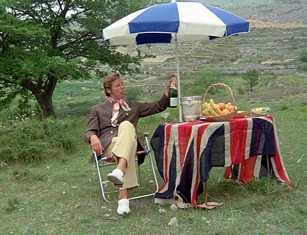
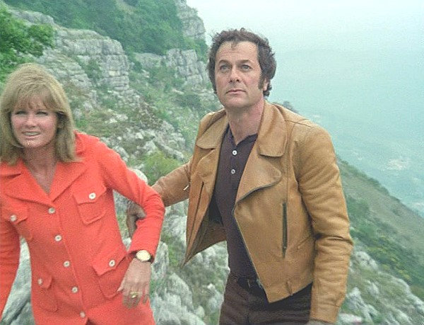
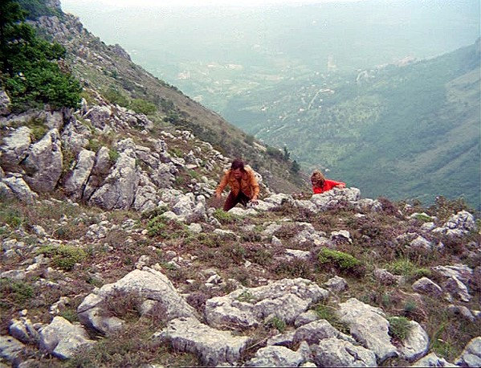
Unknown 2 -

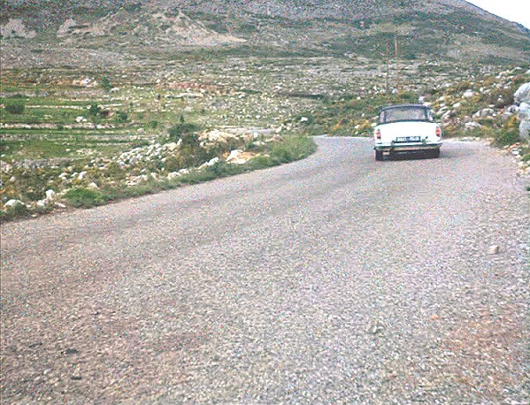
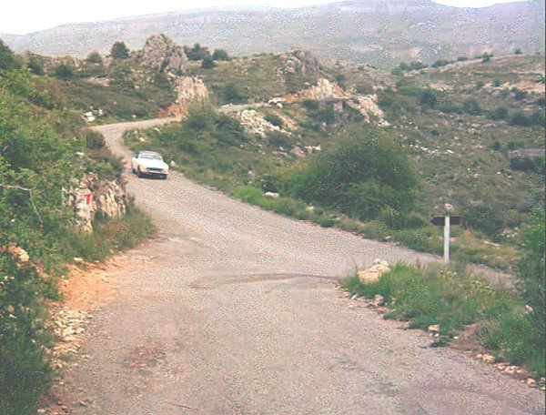
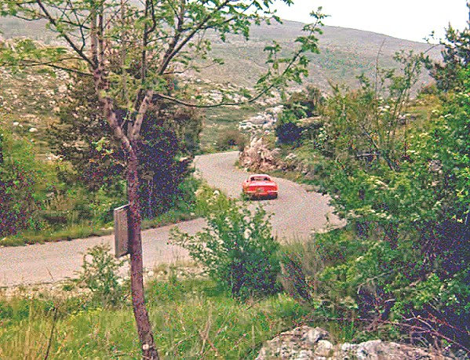
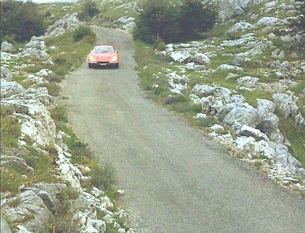
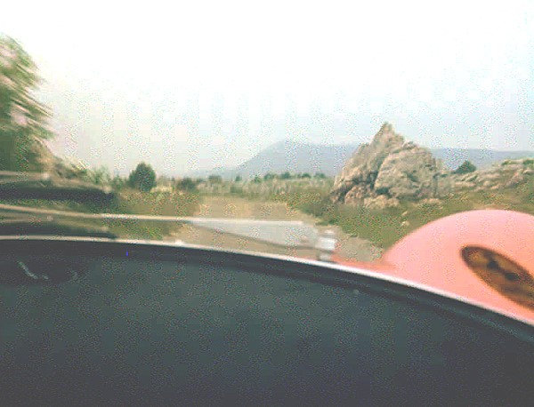
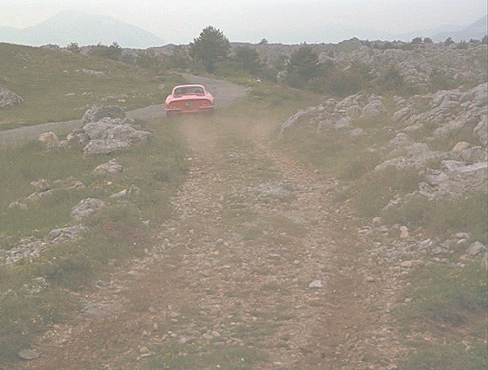
THE
PERSUADERS!: A Death In the Family
(Sidney Hayers: 1971)
Templemead,
Templewood Lane, Stoke Poges, Slough - Identified by
Sietse Postma, 6th September, 2018 -
Kate Sinclair (Diana Cilento) volunterrs to stay at the home of Roland
Sinclaire
Timberly in order to act as a bodyguard. She pretends to be grugged by
Roland
and attempts to follow him in her car, only to find he has sabotaged
her
ignition. Later she returns to the house with Danny Wilde in a taxi.
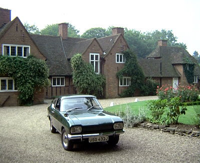
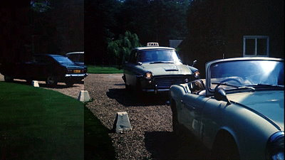
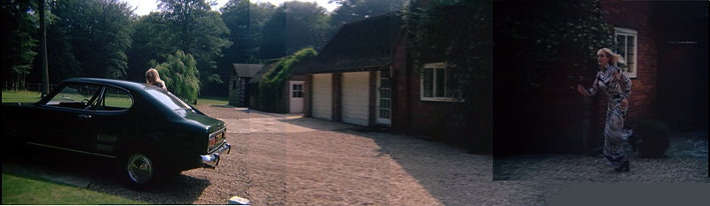
THE PERSUADERS!:
Powerswitch (Basil
Dearden: 1970)
Boulevard Édouard Baudoin, Antibes,
Provence-Alpes-Côte d'Azur, France -
Establishing shot of hrbour as Brett and Pekoe visit the morgue.
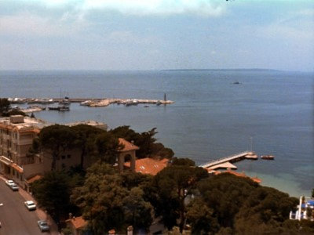
Avenue des
Diables Bleus / Boulevard du
Maréchal Leclerc / Route de l'Adret, Èze, Provence-Alpes-Côte d'Azur,
France
-
(Identified by 'Trinity' on the Roger Moore Forum, 18th
August, 2010)
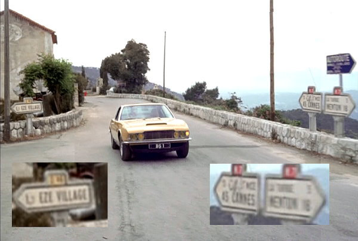
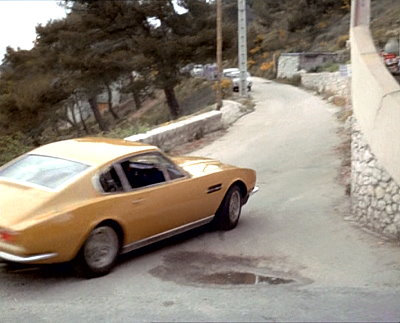
Route du Mont-Chauve, Tourrette-Levens, Provence-Alpes-Côte d'Azur, France -
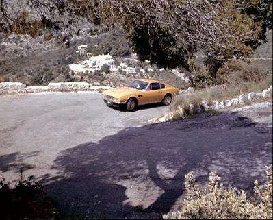
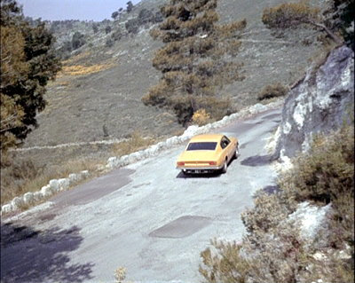
Unknown 4 - As Danny (Tony Curtis) and Pekoe (Annette Andre) walk throuhg the grounds of the Koestler Mansion Pekoe see Ravel (Les Crawford) in a garage and recognises him as the man she saw robbing Julie and Pekoe's apartment.
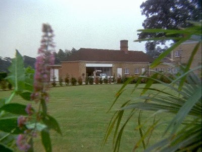
THE PERSUADERS!:
The Old, the New and
the Deadly (Leslie Norman,
1971)
Gros Bois Castle, in
Boissy-Saint-Léger,
Val-de-Marne, Île-de-France, France - Count
Marceau's country home.
(Idenified by Pierre Alfonsi, July 2012)

THE
PERSUADERS!: Element of Risk
(Gerald Mayer: 23rd Feb 1971)
Tara Stables, Colley
Hill Lane, Hedgerley, Slough,
Berkshire, SL2 4AT - The farmhouse where Danny
and Lord Brett are
held the night before the raid on the Amercian Air base.
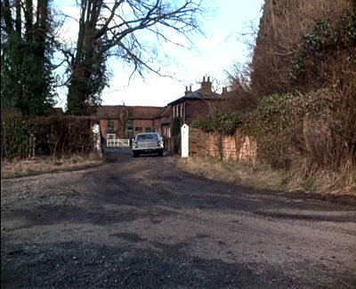
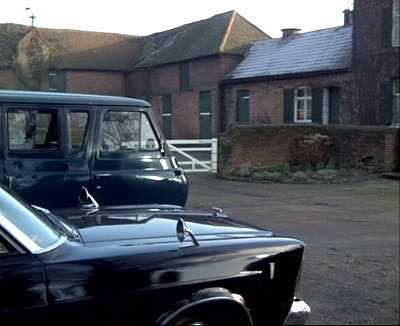

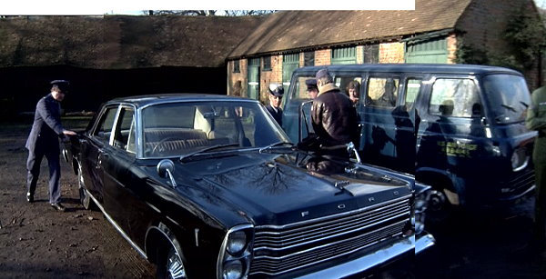
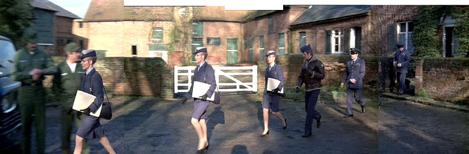
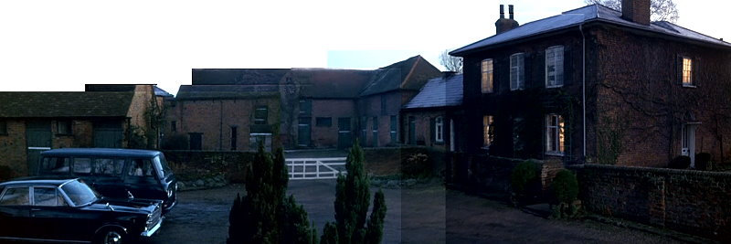
THE
PERSUADERS!: Someone Waiting
(Peter Medak: 1971)
Unknown 1 -
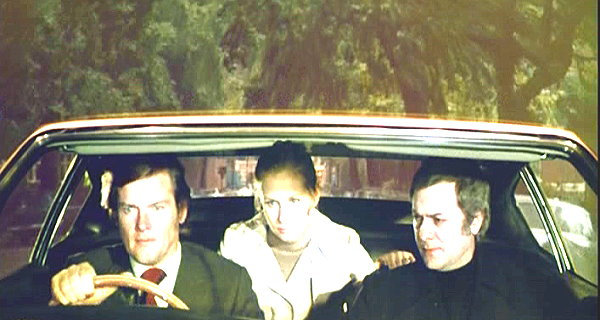
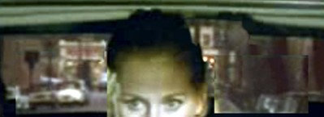
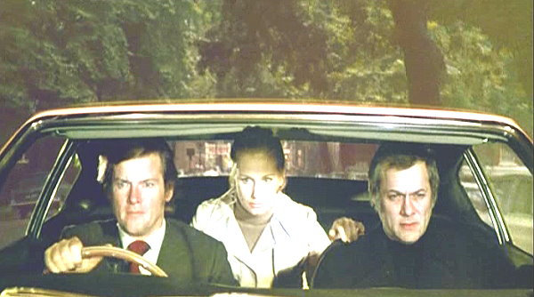
Think you know a spot? Need a bigger image? Email me.
< Previous | Index | Avengerland | Next >
Copyright © 2003 Anthony R. McKay